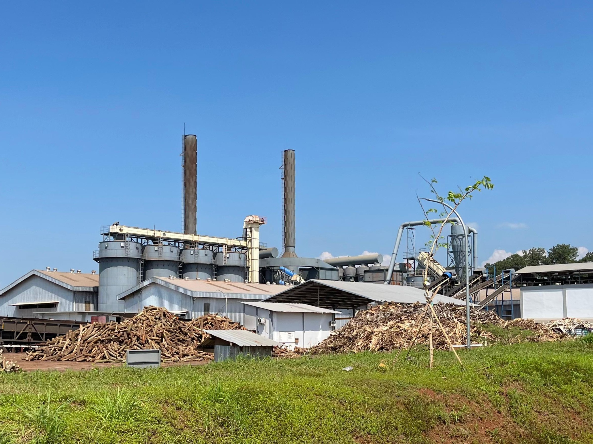
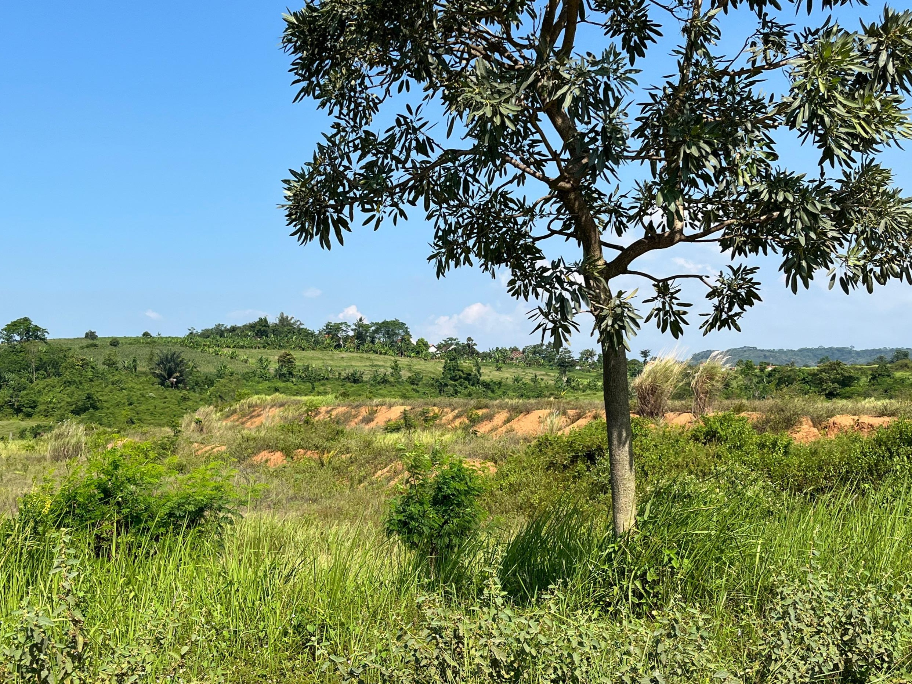
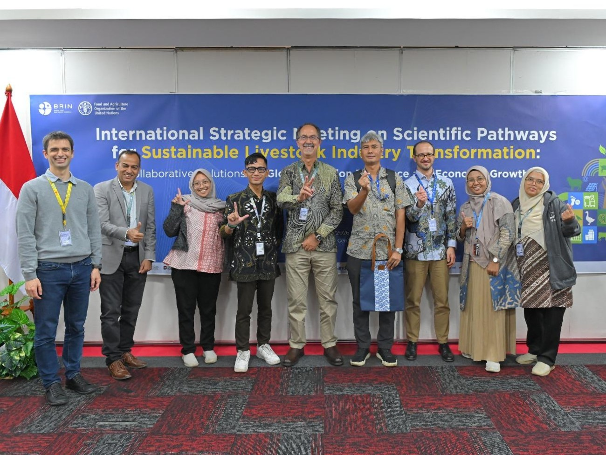
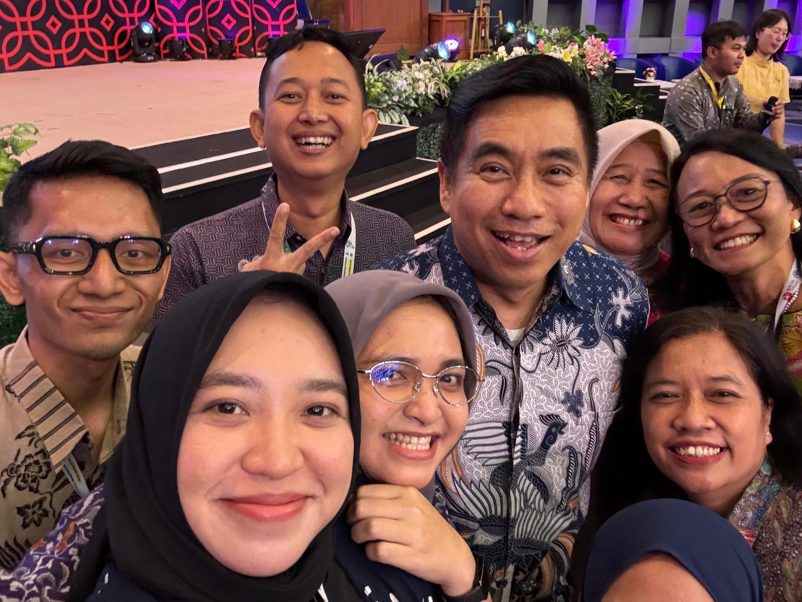

Field Notes
This page documents selected academic activities, conferences, research events, and professional engagements that contribute to my research journey, international collaboration, and academic development.
Industrial Expansion and Environmental Sustainability Trade-Offs in Batang Industrial Area


Conducted a field survey and institutional discussions in the Batang Industrial Area, Central Java, Indonesia, from 5–8 May 2026, focusing on the emerging trade-offs between rapid industrial expansion and environmental sustainability.
Batang has become one of Indonesia’s strategic growth centers through the development of a National Strategic Project (PSN), particularly in the context of large-scale industrial estate expansion. The region reflects how industrialization can significantly stimulate local economic growth, create employment opportunities, and accelerate regional development.
However, the field observations also highlighted important environmental concerns associated with rapid land transformation and industrial intensification. Without proper environmental governance and sustainable spatial planning, industrial expansion may increase pressures on ecological systems, landscape integrity, and long-term environmental resilience.
The survey activities included direct field observations, landscape documentation, and discussions with several related institutions, particularly local government stakeholders involved in spatial planning and regional development management.
This experience provided valuable insights into the complex relationship between economic development, industrial policy, and environmental sustainability in rapidly transforming regions of Indonesia.
International Strategic Meeting on Scientific Pathways for Sustainable Livestock Industry Transformation


Participated in the International Strategic Meeting on Scientific Pathways for Sustainable Livestock Industry Transformation, held in Jakarta, Indonesia, from 25–31 March 2026, as both a participant and organizing committee member.
This international event was jointly organized by the National Research and Innovation Agency (BRIN) and the Food and Agriculture Organization (FAO), bringing together researchers, practitioners, and policymakers to explore scientific pathways toward a more sustainable livestock sector.
The program included capacity-building training on ecosystem services in agricultural systems, research dissemination sessions, and a competition for early-career researchers and innovators.
The meeting provided an important platform for knowledge exchange, interdisciplinary collaboration, and strengthening research networks at both national and international levels.
ASEAN-NEXUS Early Career Researchers Conclave


Participated in the ASEAN-NEXUS Early Career Researchers Conclave held in Singapore from 7–11 December 2025, organized through a collaboration between A*STAR (Agency for Science, Technology and Research) and the Japan Science and Technology Agency (JST).
The event was conducted alongside a major scientific conference in Singapore and brought together early-career researchers from across ASEAN and international institutions.
This conclave provided an inspiring platform to exchange ideas, build international research networks, and discuss collaborative pathways for addressing regional sustainability challenges. Meeting leading global researchers and highly motivated young scholars reinforced the importance of interdisciplinary collaboration in advancing a more sustainable and resilient ASEAN region.
Best Innovation Award — Spatial Planning Innovation Competition (HANTARU 2024)


Received the Best Innovation Award during the National Agrarian and Spatial Planning Day (HANTARU) 2024, held on 1 October 2024 in Semarang, Indonesia.
The award recognized innovative contributions in the field of spatial planning and territorial development. It highlights the importance of research-driven ideas and creative approaches in addressing contemporary urban and regional planning challenges.
The award was presented directly by the Head of the Spatial Planning Agency of Semarang City as part of a competition encouraging innovative thinking and practical solutions for more sustainable spatial planning practices.
This recognition represents an important milestone and reinforces the role of research, innovation, and collaboration in contributing to the development of more sustainable and resilient cities.